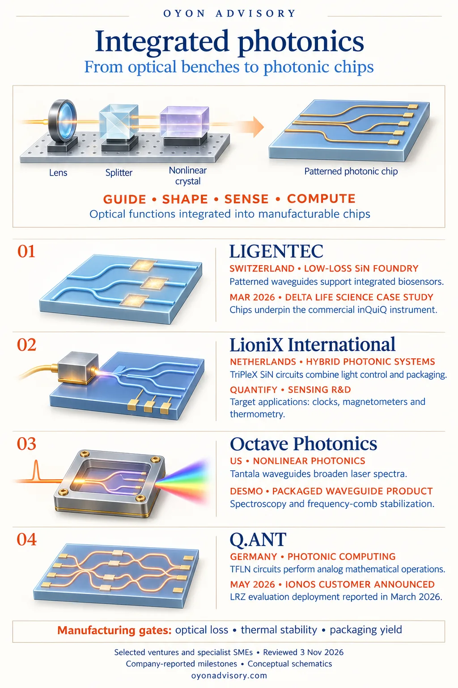

Back to Research & Perspectives
Integrated Photonics Beyond Data Links: From Optical Benches to Photonic Chips
Many precision optical systems assemble separate lenses, splitters, filters and other components. Integrating more of these functions onto chips can make instruments smaller, more stable and easier to manufacture.
The opportunity spans biosensing, spectroscopy, precision measurement, quantum light control and classical photonic computing.
The current technology landscape
A photonic integrated circuit (PIC) brings optical functions together on a patterned chip. Waveguides guide light; splitters and filters distribute it or select wavelengths; active elements tune its phase or intensity; detectors measure the result.
Integration is already established, but different applications need different materials and combinations:
- Low-loss silicon nitride (SiN) supports long optical paths, resonators and precise light manipulation, including visible and near-infrared sensing. [1]
- Nonlinear materials, including tantala and lithium niobate, enable frequency conversion and spectral generation. Patterned waveguides can concentrate light and control how these interactions develop. [5][6][10]
- Hybrid integration combines photonic circuits with sources, electronics and packaging. Some system components still remain outside the chip. [3]
Useful products require more than miniaturization: optical loss, temperature drift, fabrication variation and packaging must remain under control. The following four companies illustrate distinct pathways. They include ventures and established specialist SMEs.


Four company pathways
1. LIGENTEC | Switzerland — Low-loss SiN manufacturing
LIGENTEC provides a silicon-nitride fabrication platform for integrating waveguides, resonators and other optical structures. Low loss helps preserve light as it travels through increasingly complex circuits.
A March 2026 case study describes its work with Delta Life Science, whose inQuiQ instrument measures biomolecular interactions without fluorescent labels. Binding at functionalized sensor surfaces changes the local refractive index. LIGENTEC supplies the underlying PIC technology and supported the path from prototyping to manufacturing; the instrument reached the market in 2024. [2]
2. LioniX International | Netherlands — Integrated optical systems
LioniX combines its TriPleX SiN platform with design, hybrid integration, packaging and control electronics. This helps turn an optical circuit into a usable module. [3]
Its QUANTIFY project work targets photonic building blocks for optical clocks, magnetometers and temperature sensing. The company’s role includes SiN circuitry, coupling to gain chips and narrow-linewidth tunable lasers. These are R&D objectives; commercial sensor deployment is a separate step. [4]
3. Octave Photonics | US — Nonlinear waveguide products
Octave develops packaged nonlinear photonic devices, including tantala (Ta2O5) waveguides. Its DESMO module broadens an ultrashort laser pulse into a wider spectrum for spectroscopy and frequency-comb stabilization. Packaging the waveguide with optical connections makes the device easier to incorporate into an instrument. [5]
A May 2026 paper co-authored by Octave and NIST researchers also explored titania–tantala mixtures to reduce optical absorption while retaining useful nonlinear properties. This adds research evidence for materials development alongside the existing product offering. [6]
4. Q.ANT | Germany — Classical photonic computing
Q.ANT uses thin-film lithium niobate (TFLN) PICs to perform analog mathematical operations, supported by electronics and software. It raised €62 million in Series A funding in July 2025, co-led by Cherry Ventures, UVC Partners and imec.xpand. [7]
In March 2026, it reported second-generation processor deployment at the Leibniz Supercomputing Centre (LRZ) for evaluation. A May 2026 agreement named IONOS as its first commercial customer, with rollout planned. Useful comparisons must include numerical accuracy, conversion, calibration and total system power. [8][9]
The opportunity
The strongest opportunities connect a distinctive material or fabrication process to an instrument-level need: stable sensing, useful spectral output, precise light control or efficient computation.
Commercial value depends on repeatable wafer and packaging yield, reliable operation and customer adoption. For investors, a key question is how much of the design, process and package can be reused across customers—and how much remains custom engineering.
Selected public sources
- imec — Silicon nitride platforms, properties and applications
- LIGENTEC — Delta Life Science biosensing case study; March 20, 2026
- LioniX International — TriPleX PIC design, manufacturing, packaging and control
- LioniX International — QUANTIFY sensing and metrology R&D project; current project description
- Octave Photonics — DESMO packaged nonlinear waveguide product; current product description
- Carollo et al. — Amorphous metal oxide mixtures for high-Q integrated nonlinear photonics; Communications Physics, May 7, 2026
- Q.ANT — €62 million Series A announcement; July 17, 2025
- Q.ANT — Second-generation processor deployment at LRZ; March 17, 2026
- Q.ANT — IONOS commercial-customer agreement; May 19, 2026
- NIST — Wavelength conversion and periodically poled lithium niobate